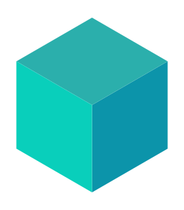

Sou Victhor Santos, estudante de Engenharia de Software na PUC Minas. Construo minha base em backend e amplio essa jornada com Machine Learning, conectando código, arquitetura e inteligência.
Minha trajetória começou com Java. É com ele que venho construindo minha base em orientação a objetos, estruturas de dados e boas práticas. Gosto de entender como as peças funcionam juntas: do primeiro objeto à organização de uma aplicação inteira.
Java
Orientação a objetos
Git
02BACKEND
Do código ao sistema.
Com Spring Boot, APIs REST, PostgreSQL e Spring Data JPA, passei a explorar a construção de aplicações backend. Docker, testes e arquitetura entraram nessa jornada para me ajudar a desenvolver sistemas organizados, consistentes e de fácil manutenção.
Spring Boot
REST APIs
PostgreSQL
Docker
JUnit
03ARQUITETURA
Projetos que conectam as peças.
No Delivery Order System, hoje AI-Powered Delivery Platform, estou desenvolvendo uma plataforma de delivery em microsserviços. O catálogo já tem persistência, migrations e testes de integração. Pedidos, pagamentos e entregas seguem em evolução, junto à arquitetura e às regras de negócio.
Microsserviços

Testcontainers
SQL
04MACHINE LEARNING
Uma nova camada: inteligência.
Agora, amplio essa base com Python e Machine Learning. Estou estudando FastAPI, NumPy, Pandas e scikit-learn para entender o caminho entre preparar dados, treinar um modelo, avaliar seus resultados e disponibilizar suas previsões em uma aplicação.
Python
FastAPI
NumPy
Pandas
scikit-learn
05PRÓXIMOS PASSOS
O modelo é parte do sistema.
Minha direção é AI Engineering: unir engenharia de software, backend e Machine Learning. O próximo passo da plataforma é um serviço de inteligência de rotas, ainda planejado. Quero avançar também em MLOps e Cloud, porque uma solução de IA precisa de APIs, dados, testes e infraestrutura para funcionar em sistemas reais.
Machine Learning
Python
Docker
GitHub
02 / NA PRÁTICA
A trajetória continua no código.
Explore os projetos, suas arquiteturas e o que estou construindo agora.